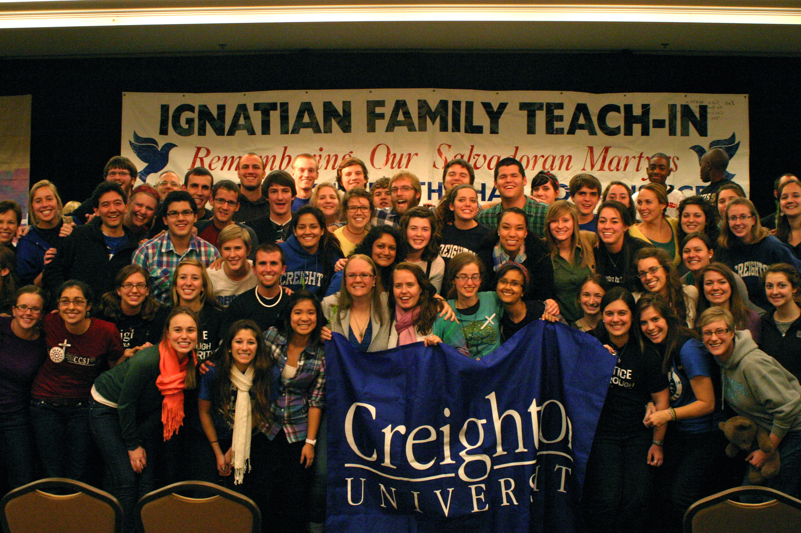

- Service Part of the Creighton Experience
- - by Nidaa Mungloo
- Students identify service as being a big part of their education at Creighton University. To many, it is what makes their time at Creighton unique and very enriching.
- Tutoring sessions with children of non-English speakers helped Creighton freshman Mahek Shahid realize the value of her own education.
- “It’s very rewarding,” the biology major says, “Tutoring made me realize the value of literacy in today’s age, as well as appreciate how blessed I am to be receiving higher education.”
- Creighton supports service and volunteer activities for its students, who annually participate in about 471 000 hours of service, according to its Center for Service and Justice. The emphasis on service comes from Creighton’s mission and Jesuit value of “women and men for and with others.”
- Shahid volunteers at the Boys and Girls Club of Omaha and assists at blood drives on campus in addition to the tutoring.
- For Ibrahim El Ashri, an international student who will be graduating this spring, going on a service trip offered during fall and spring breaks is a must for any Creighton student. Students volunteer for a week at various locations throughout the country, where they engage in a range of activities: from building houses for homeless people to working in soup kitchens.
- “I went to a farm where we learned about various sustainability methods,” El Ashri said. “It was intense and challenging but I learned a lot about what it means to live sustainably, and how important it is for us to do so.”
- The service trips also give students leadership experience as students help coordinate and organize the trips.
- “Tutoring children has allowed me to give back to the community, and I look forward to expanding my service experiences in my coming years at Creighton,” says Shahid.